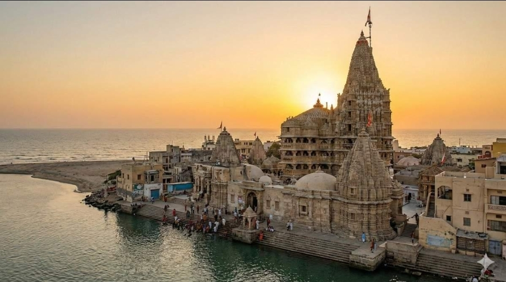
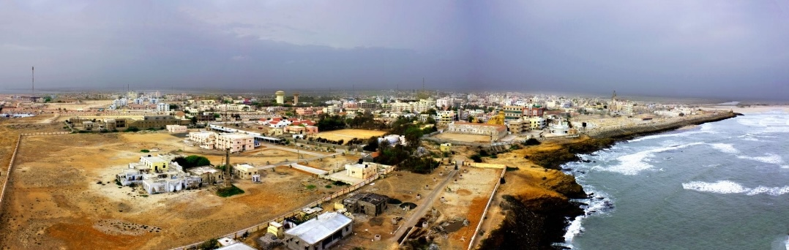
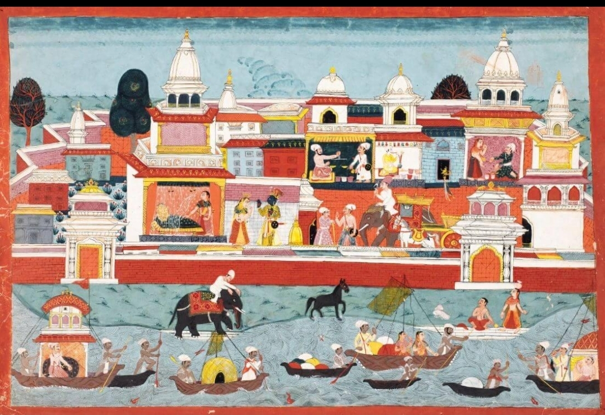

“History remembers through records. Myth remembers through stories. Sometimes, those stories turn out to be history wearing the clothes of legend.”
When Does a Myth Become History?
Human civilization has always been fascinated by cities that vanished.
Some were consumed by fire. Others were abandoned to deserts or swallowed by forests. A few, however, are said to have disappeared beneath the sea itself, leaving behind little more than stories whispered across generations.
The Greeks spoke of Atlantis, a magnificent island civilization that allegedly vanished in a single day and night. The Egyptians remembered Heracleion, a bustling port that disappeared into the Mediterranean before archaeologists rediscovered it in the twentieth century. The Welsh preserved tales of Cantre'r Gwaelod, a fertile kingdom claimed by the sea. Japan has the mysterious underwater formations of Yonaguni, still debated by scientists today.
India has its own submerged city.
Dwarka.
Not merely an ancient port, but according to Hindu tradition, the magnificent capital of Lord Krishna—a city said to have glittered with grand palaces, broad avenues, fortified walls, bustling harbours, and extraordinary wealth before the Arabian Sea reclaimed it forever.
For centuries, historians placed Dwarka in much the same category as Atlantis: culturally invaluable, spiritually profound, but historically uncertain. It was regarded as an epic setting rather than an archaeological destination. The Mahabharata and the Puranas described its rise and destruction with remarkable detail, yet those accounts were largely interpreted as symbolic literature rather than literal history.
Then marine archaeologists began looking beneath the waters off the coast of Gujarat.
What they discovered did not prove every verse of the Mahabharata. Nor did it settle every historical question surrounding Krishna. But it did uncover something undeniably real: the remains of ancient human activity lying beneath the sea exactly where tradition had always placed the legendary city.
Suddenly, a question that had long belonged to theology entered the realm of archaeology.
Could one of India's greatest epics have preserved the memory of a real city that vanished beneath the ocean?
Or were archaeologists seeing patterns where none existed?
The answer, as is often the case, lies somewhere between certainty and mystery.
A Kingdom Built for a God-King
To understand why Dwarka continues to fascinate archaeologists, historians, and millions of devotees alike, we must first understand the story itself.
According to the Mahabharata, Krishna did not always rule from Dwarka.
His early kingdom was Mathura, but relentless attacks by King Jarasandha made the city increasingly vulnerable. Rather than risking countless lives through endless warfare, Krishna chose an unusual strategy.
He moved.
The epic tells us that Krishna led the Yadava clan westward toward the coast of present-day Gujarat. There, with the assistance of the divine architect Vishwakarma, an entirely new city was constructed.
The texts describe an extraordinary urban centre.
Wide roads intersected at carefully planned angles. Massive gateways protected the entrances. Elegant palaces lined the streets. Harbours welcomed ships arriving from distant lands. Defensive walls encircled the settlement, while surrounding waters offered natural protection against invading armies.

The Harivamsa, often regarded as an appendix to the Mahabharata, adds intriguing details. It describes land that was “released by the ocean” before the city was constructed—a poetic expression that many interpret as reclaimed coastal land.
Whether this description reflected divine intervention or an ancient understanding of coastal engineering remains impossible to know.
Yet the imagery is striking.
Long before modern concepts of land reclamation existed, an ancient text described a city established on newly recovered coastal ground.
The Bhagavata Purana expands the city's magnificence even further, describing countless dazzling palaces adorned with precious metals and gemstones. Clearly, such descriptions belong partly to the language of devotion, where greatness is often expressed through symbolism rather than engineering measurements.
Still, beneath the poetic embellishments lies something surprisingly practical.
The texts repeatedly emphasize fortifications.
Harbours.
Road networks.
Urban planning.
Coastal geography.
These are not merely spiritual ideas.
They are characteristics of real cities.
The Day the Ocean Came
Perhaps the most haunting passage appears not in the account of Dwarka's construction, but in its destruction.
Following Krishna's departure from the world after the devastating Yadava civil war described in the Mausala Parva, Arjuna journeys to Dwarka to escort the surviving inhabitants away from the city.
The Mahabharata describes what happened next in vivid language.
As the people departed, the sea advanced.
Buildings disappeared beneath rising waters.
Palaces collapsed.
Roads vanished.
The ocean consumed the city until nothing remained visible except the endless expanse of water.

It is one of the most dramatic endings ever written for an ancient capital.
To generations of believers, this marked the conclusion of the Dvapara Yuga, the age in which Krishna walked the Earth.
To many historians, however, the passage was interpreted differently.
Ancient civilizations frequently personified natural disasters.
Floods became divine punishment.
Earthquakes became expressions of cosmic anger.
Volcanic eruptions became battles among gods.
Perhaps Dwarka's destruction belonged to that same literary tradition.
For hundreds of years, few expected archaeologists to discover anything beneath the Arabian Sea.
The story remained where many assumed it belonged—within mythology.
Until the twentieth century.
Can Myths Preserve Real History?
Modern readers often separate mythology and history into completely different categories.
Ancient civilizations rarely did.
Before writing became widespread, knowledge survived through oral tradition.
Stories were easier to remember than chronological records.
Genealogies became songs.
Battles became epics.
Natural disasters became sacred narratives.
This raises an important possibility.
What if myths are not fabricated histories?
What if they are compressed memories?

Around the world, researchers have discovered remarkable examples of oral traditions preserving real events over astonishing lengths of time.
Along Australia's coastline, Aboriginal communities have passed down stories describing landscapes that once existed before rising seas submerged them thousands of years ago. Geological studies suggest several of these narratives correspond to coastal changes that occurred nearly seven thousand years ago, making them among humanity's oldest continuously preserved historical memories.
In North America, Indigenous oral histories describing an immense earthquake and devastating ocean waves were once dismissed as folklore. Modern geological research later confirmed that the Cascadia Subduction Zone produced a massive earthquake and tsunami around the year 1700, closely matching those traditional accounts.
Even the legendary city of Troy occupied a similar place in academic thought.
For centuries, many scholars regarded Homer's Iliad as literary fiction.
Then, in the nineteenth century, excavations at Hisarlik in modern-day Türkiye uncovered the remains of an ancient city built in multiple layers, demonstrating that behind Homer's epic stood a genuine urban settlement whose memory had survived in poetry long after its destruction.
History had not emerged from myth.
Rather, myth had preserved fragments of history.
This does not mean every legend is factual.
Nor does it mean every sacred text functions as a historical document.
But it reminds us of something important.
Ancient stories often contain memories of real places, real landscapes, real kingdoms, and real catastrophes—even if centuries of storytelling transform those memories into something larger than life.
Dwarka would eventually force archaeologists to confront precisely this possibility.
Could India's greatest epic also be preserving the memory of an ancient coastal city that genuinely existed?
For decades, that question remained largely philosophical.
Then marine archaeologists entered the Arabian Sea.
And the seabed began telling its own story.
To be continued in Part 2: Beneath the Arabian Sea — What Marine Archaeologists Actually Found, where we'll examine Dr. S. R. Rao's expeditions, the submerged structures, stone anchors, dating evidence, geology, and what the archaeological record does—and does not—tell us.
The file remains open.